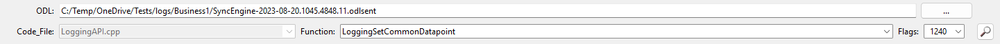
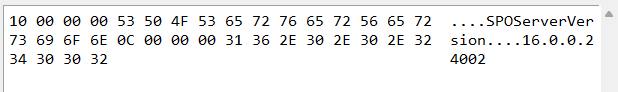

Lyman is a tool to ease the creation of cstruct files for log entries from ODL files. Cstructs aid in the readability of various log entries and help with the decryption process.
Lyman's interface can be broken into four distinct areas.
The search pane is the starting point for Lyman. The ODL file intended for searching must be selected by either entering its path and pressing enter or clicking the ellipsis (...) button and navigating to the ODL file. Once an ODL file is chosen, select the code_file, function, and flags to find the desired log entry. Only one code_file can be added, but multiple functions and flags can be added under the code_file.

This is where the cstruct file is defined to parse the ODL log entry. Additional function tabs will appear if more than one function is being worked on. All fields must be filled in, with various entries automatically populated based on selections from the search pane.
The data pane will show the hex and ascii output of the raw data for the log entry.

The output pane is used to test the output of the cstruct that is being created.
A structure consists of two parts:
Together, these elements define what the data is. Lets break this down in the following example. The data for a log entry looks like this:
Examining the raw data reveals words and numbers. To define this data, a structure can be created.
The word "SPOServerVersion" is visible in the data. Preceding it are 4 bytes. Upon closer inspection, these bytes translate to 0x10 in hexadecimal. Converting this hex value to decimal yields 16, which matches the length of "SPOServerVersion". The structure can be written as follows:
After a structure is started, it can be tested against the data to see if has the outcome that is desired.
There are a few things to note:
int8: An 8-bit signed integer (1 byte).
uint8: An 8-bit unsigned integer (1 byte).
int16: A 16-bit signed integer (2 bytes).
uint16: A 16-bit unsigned integer (2 bytes).
int32: A 32-bit signed integer (4 bytes).
uint32: A 32-bit unsigned integer (4 bytes).
int64: A 64-bit signed integer (8 bytes).
uint64: A 64-bit unsigned integer (8 bytes).
float16: A 16-bit floating-point number (2 bytes).
float: A 32-bit floating-point number (4 bytes).
double: A 64-bit floating-point number (8 bytes).
char: A single character (typically 8 bits).
wchar: A wide character (typically 16 or 32 bits).
int24: A 24-bit signed integer (3 bytes).
uint24: A 24-bit unsigned integer (3 bytes).
int48: A 48-bit signed integer (6 bytes).
uint48: A 48-bit unsigned integer (6 bytes).
int128: A 128-bit signed integer (16 bytes).
uint128: A 128-bit unsigned integer (16 bytes).
uleb128: Unsigned Little Endian Base 128 Varints (variable size).
ileb128: Signed Little Endian Base 128 Varints (variable size).
void: A placeholder indicating no data type (usually used to represent absence of data type).
When finished creating the cstruct, the cstruct can be saved from the File menu and selecting Export cstruct. The file will be saved to the same directory Lyman is located in with the name of the code_file and the extension .cstruct.
From the File menu, Lyman can be cleared to start over if need be.